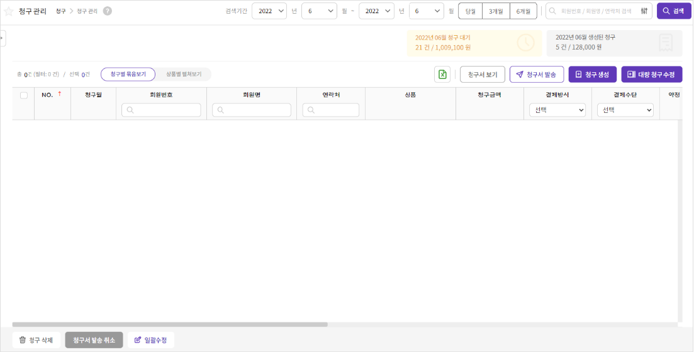

-
자동 청구 생성
청구 데이터를 자동으로 생성합니다.
회원등록 시 청구정보의 ‘청구생성’을 ‘자동’으로 설정하면 약정일에 맞춰 청구데이터가 자동으로 생성됩니다.
-
자동 청구 생성하기
자동생성 기준
- 일괄생성 : 매월 마지막 영업일 07:00 신청완료된 회원의 청구데이터가 약정일에 맞춰 자동 생성됩니다.(약정일이 휴일이면 다음 영업일로 생성)
- 추가생성 : 매일(영업일) 07:00 신규등록된 회원이 있다면 해당 회원의 청구데이터가 약정일에 맞춰 자동 생성됩니다.(약정일이 휴일이면 다음 영업일로 생성)
- 당월 신규 등록된 회원의 약정일이 이미 지난 경우는 다음달부터 자동 생성됩니다. 약정일이 지난 회원의 당월 청구를 생성하기 위해서는 ‘청구생성’ 을 통해 수동 생성해야 합니다.
TIP!
-
수동 청구 생성
청구 데이터를 수동으로 생성합니다.
회원등록 시 청구정보의 ‘청구생성’을 ‘수동’으로 설정한 회원은 사용자가 직접 청구데이터를 생성합니다.
-
수동 청구 생성하기

청구월 : 각 청구는 대상 청구월(귀속월)이 있습니다. 몇월분 청구데이터를 생성할것인지 선택하여 검색합니다.
대상회원 : 검색 후 리스트에 표시되는 회원은 해당 청구월에 청구를 생성할 수 있는 회원입니다. 대상회원을 선택하고 ‘청구생성’ 버튼을 누르면 청구가 생성됩니다.(약정일이 휴일이면 다음 영업일로 생성)
약정일이 지난 청구건 당월 결제일 생성 : 당월 약정일이 지난 회원의 경우 ‘약정일이 지난 청구건 당월 결제일 생성’을 체크하고 생성하면 가장 가까운 날짜로 청구를 생성합니다.
-
청구 수정/삭제하기
청구데이터를 조회하여 정보를 수정하거나 삭제할 수 있습니다.
[청구 > 청구관리]에서 생성된 청구데이터를 조회하고 특정 청구 건에 대한 정보를 수정하거나 삭제할 수 있습니다.
청구수정
- 대상 청구 선택 : 청구관리에 조회된 청구 중 수정이 필요한 청구건을 더블클릭합니다.
- 수정 : ‘수정’ 버튼을 눌러 필요한 정보를 수정하고 ‘저장’ 버튼을 누르면 완료됩니다.
-
청구삭제
- 대상 청구 선택 : 청구관리에 조회된 청구 중 삭제가 필요한 청구건을 선택합니다.
- 삭제 : 화면하단 ‘청구삭제’ 버튼을 눌러 청구를 삭제합니다.
상세한 청구관리화면과 기능을 확인 확인해보세요.
TIP!